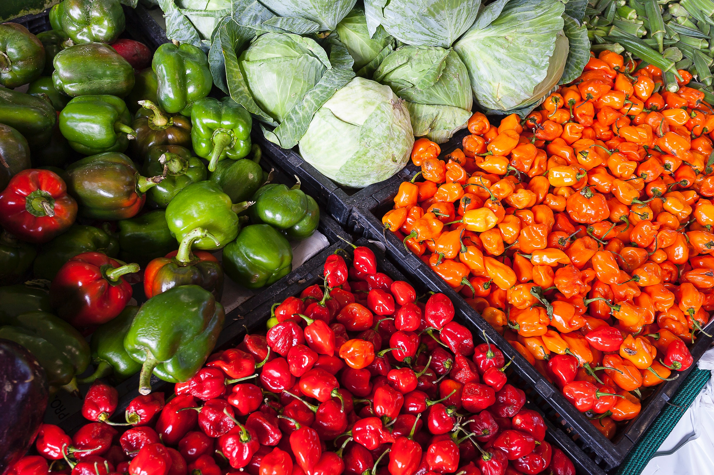

Our Vision
With the rising rate of unemployment which has led to the increase of indecent or menial jobs, poor skill sets and an unstable economic structure and growth, we believe that through our initiative we can secure a beautiful future for our dear cititzens. This initiatve will make use of the extreme resource that has been provided for us through nature to use agriculture as a major tool of promoting decent work and improving the economic growth of the nation.
-

Training
Our programmes are meant to educate, correct, encourage, inspire and motivate people espeacially youths to take up agriculture as a business and not just a developmental project. Our focus will be on rural young women and men, ages 15-35 years in which re-orientation on the benefits of Agriculture will be communicated to them.
-

Investment
Our programmes are meant to educate, correct, encourage, inspire and motivate people espeacially youths to take up agriculture as a business and not just a developmental project. Our focus will be on rural young women and men, ages 15-35 years in which re-orientation on the benefits of Agriculture will be communicated to them.
-

Exportation
According to statistics, the most popular non-oil products, which are exported from Nigeria are cocoa, cassava, rubber, wool, cotton, palm oil, wood logs (Iroko or Mahogany) groundnut oil, cashew, garlic, and other products. We provide the export plan, pricing, and financing oppotunities for exporting these products.
We are here to solve your employment and economic problems by using agriculture
From trainings, to investments, to financial planing, to exportation we are fully committed in making these process swift and easy.
Would you like to Partner with us or make further enquiries?
For more details, kindly send an email to contact@theworkersinitiative.org
At TWI, we believe there is a better way to make jobs decent and boost the economy. A more valuable, less invasive way where the status quo is changed and the future of agriculture is more valuable and reputable. We're obsessively passionate about this goal and our mission is to help people with little or no skill access this opportunity. And we're excited to bringing this initiative for everyone through technology, education and community involvement.